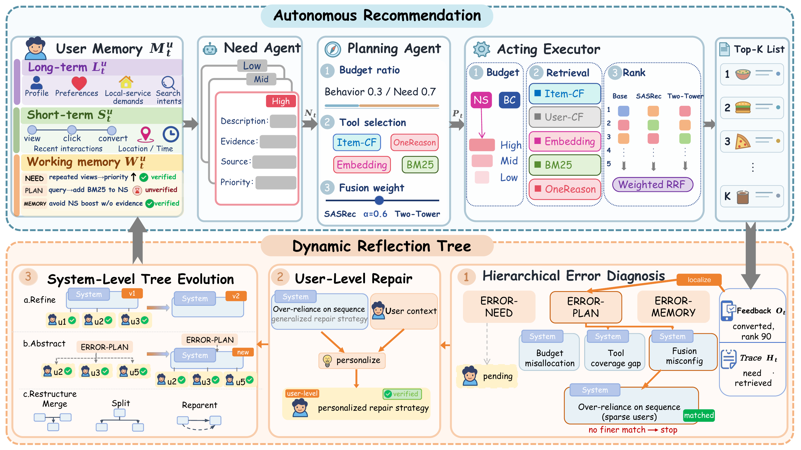

arXivNew work
EvoRec: A Unified Self-Evolving Agentic Recommender with Dynamic Reflection Trees
arXiv preprint arXiv:2611.01977, 2026
A unified agentic recommender with need inference, adaptive planning, and reflection-driven self-evolution.